BACKGROUND
The 'Engineering the Eye Hackathon' represents a dynamic, five-day event collaboratively organized by prominent organizations: Microsoft, Carl Zeiss, the LV Prasad Eye Institute, the Indian Institute of Technology Hyderabad, and the Indian Institute of Information Technology Hyderabad. Renowned as one of India's largest and most esteemed hackathons, the event stands out due to its extensive participant engagement. The hackathon centers around addressing real-world challenges encountered in the fields of Ophthalmology and Optometry, impacting both medical professionals and patients. Our specific problem statement was developed through comprehensive discussions with several doctors from the LV Prasad Eye Institute, ensuring its relevance and potential impact.
PROBLEM
Duane's Retraction Syndrome is a condition present from birth that affects eye movement. It's marked by limited sideways eye movement, and the eye area (palpebral fissure) narrows when trying to move the eyes inward. Sometimes, when attempting this inward movement, the eye might also move up or down unexpectedly.
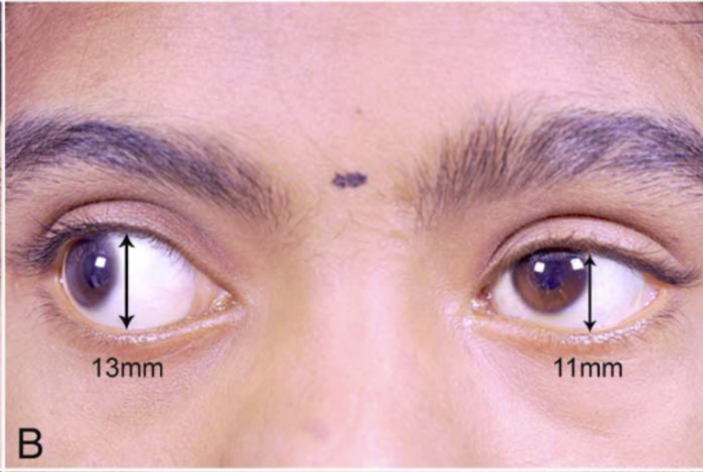
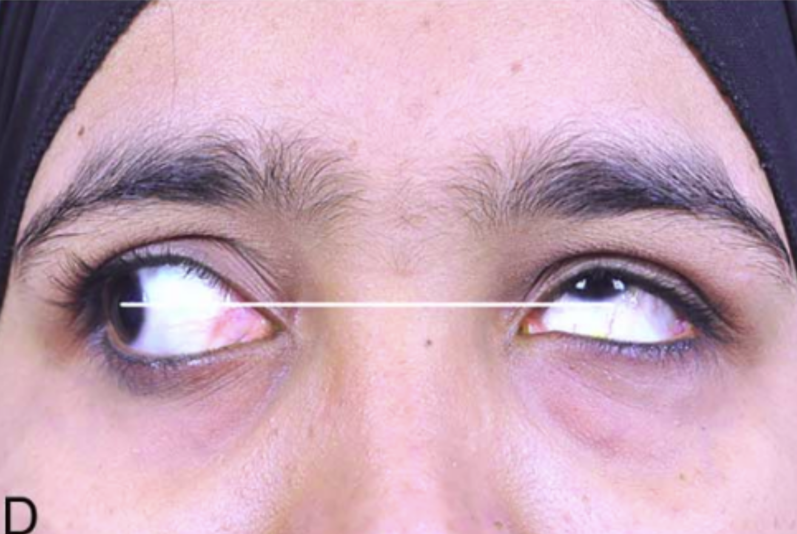
- Manual Measurement of DRS: Currently, the measurement of Duane's Retraction Syndrome (DRS) is a manual process. Experts rely on physical measuring tools and subsequent calculations to determine accurate measurements, which is both time-consuming and prone to human error.
- Risk of Infection: There have been instances, as highlighted by a doctor we consulted, where patients contracted infections due to the use of non-sterile physical measurement devices during the assessment process.
- Lack of Live Measurement in Surgery: In the context of corrective surgeries or treatments for eye conditions, there is no system in place for the live measurement of the degree of deviation from the normative eye alignment. This absence of real-time data can impact the precision and effectiveness of these medical interventions.
RESEARCH
In addressing Duane's Retraction Syndrome (DRS), we encountered the challenge of establishing a measurable standard for deviation from the norm. Most doctors rely on experience for assessment, as a widely recognized standard isn't yet in common use. Although a standard by Dr. Kekunnaya and colleagues exists, it hasn't been universally adopted. After consulting with four doctors at our institute, we decided to implement the methodology proposed in Dr. Kekunnaya's paper.
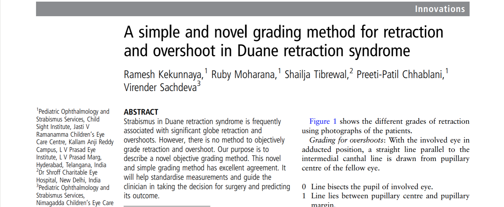
Once we fixed on the algorithm to use to determine the degree of DRS, we spent time brainstorming about various methods to get measurements
Each of us were experimenting on various approaches. We tried following approaches
- Deep Learning-Based Point Detection: Utilize a deep learning approach to identify key facial points (such as the top and bottom of the eyelid, center of the pupil, etc.). These coordinates can then be used to calculate the necessary distances.
- Computer Vision Approach: Implement a method that involves converting the image to grayscale and employing Harr-Cascade classifiers and blob detection techniques to locate the iris. Subsequent adjustments to the program would enable distance measurements.
- Exploring Pre-Existing Models: Conduct a thorough search for existing models that may be adapted or integrated into our solution.
We quickly ruled out the deep learning solution due to a lack of sufficient data and resources necessary for training an effective model. Our initial attempts with a computer vision-based approach yielded moderate success. However, this method had to be ultimately set aside as the accuracy of the results was significantly impacted by variables such as lighting conditions and the positioning of the subject in the image. A pivotal moment came when we engaged in a discussion with a senior Microsoft engineer present at the venue, who introduced us to the Microsoft Azure Face API.
The Microsoft Azure Face API demonstrated remarkable proficiency in detecting major landmarks on various face images. Through extensive experimentation with a diverse array of images, we achieved a notably high success rate, underscoring the robustness and reliability of the API.
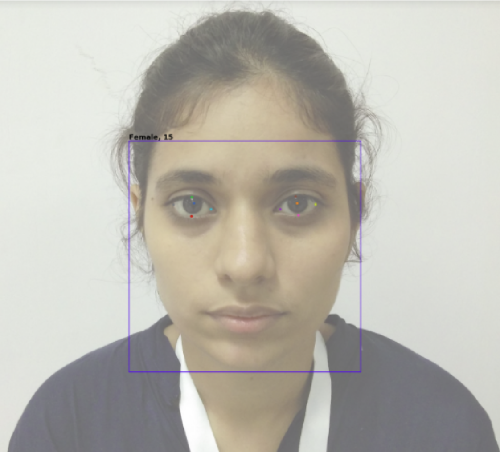
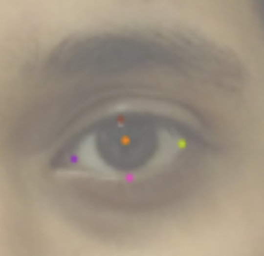
An advantageous aspect of our approach was leveraging Kekunnaya's algorithm, which primarily relies on calculating ratios. This meant that calibration issues, often a concern in such applications, did not affect our results, significantly enhancing the reliability of our method.
Our mentor highlighted a critical concern: ensuring data security against potential breaches. This is especially paramount given that the iris constitutes a biometric signature, and the leakage of such sensitive images could lead to significant ramifications. To address this issue, we opted to integrate the Zeiss Visuhealth API, renowned for its secure and accurate transmission of ocular images over the Internet, facilitating communication between doctors and patients. Consequently, our final architecture incorporated this API as a key component to ensure enhanced data security.
SOLUTION
Our final Solution incorporates the following architecture
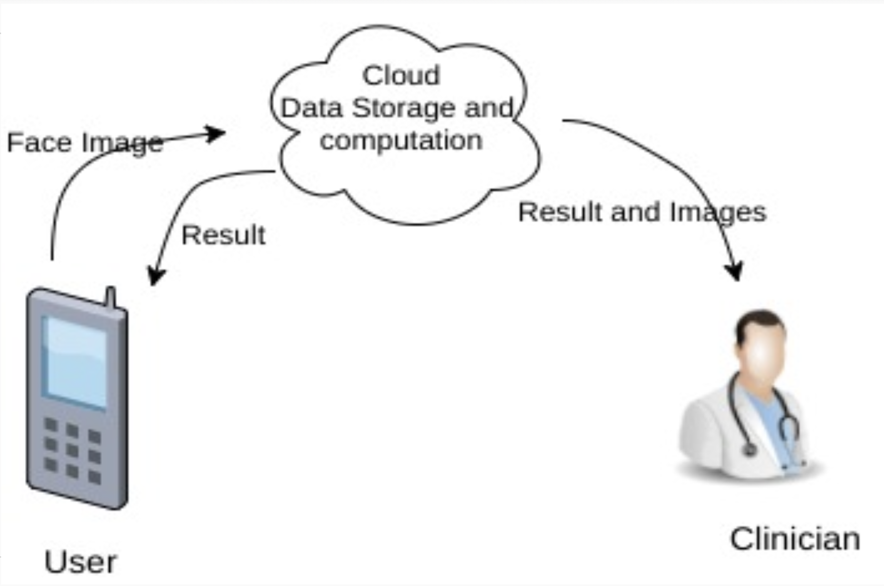
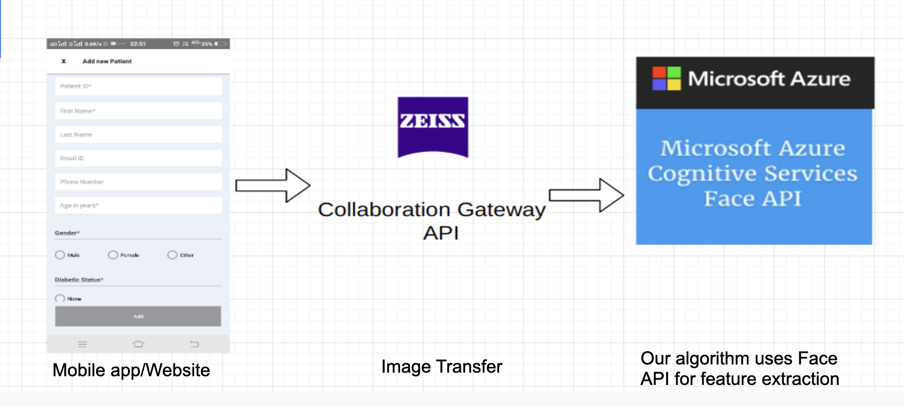
And our final results:
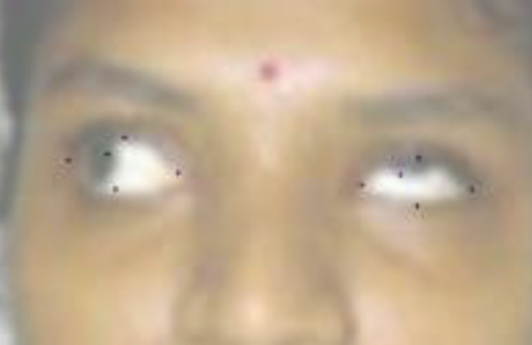
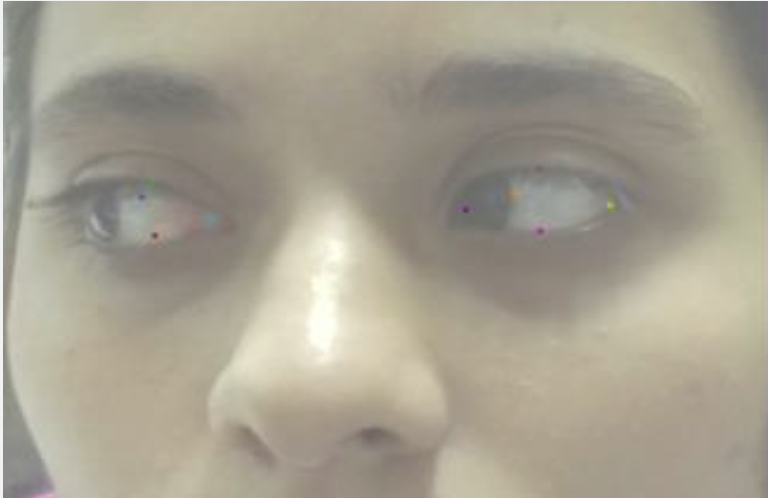
FINAL CODE
FUTURE SCOPE/ENHANCEMENTS
- Expand into Real-time video analysis for more effective diagnostic and surgical applications.
- Improve precision in detecting various types of DRS, particularly beyond types 1, 2, and 3, by acquiring and analyzing more diverse data sets.
- Adopt and scale the system to encompass all grades of overshooting, in line with the methodology proposed by Dr. Kekunnaya and colleagues.
- Microsoft Azure's face API showed limitations in cases where patients had eye diseases causing discoloration to the sclera, like cataracts. After consultations with Microsoft engineers, it was attributed to current dataset limitations and model training. Addressing this with an enhanced dataset could resolve the issue.
KEY LEARNINGS
- The most profound insight was the disparate progression of healthcare and technology in India. Complex health issues often have simple tech solutions, yet they are overlooked. Hackathons provide some relief, but more collaborative efforts are needed between tech institutions like IITs and the healthcare field.
- Participating in my first hackathon was a revelation. Despite initial doubts, the experience showcased the incredible potential of collaborative problem-solving in a conducive environment, changing my perspective on innovation and teamwork.
GALLERY
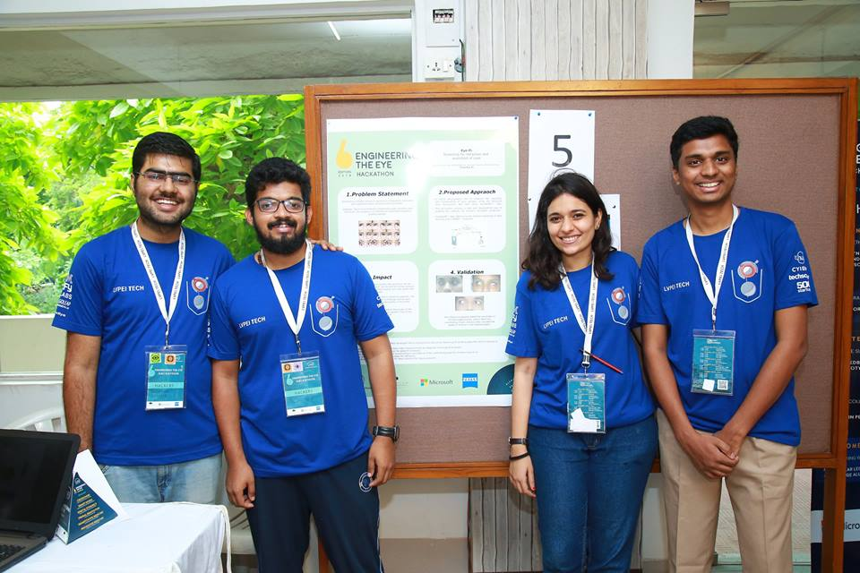
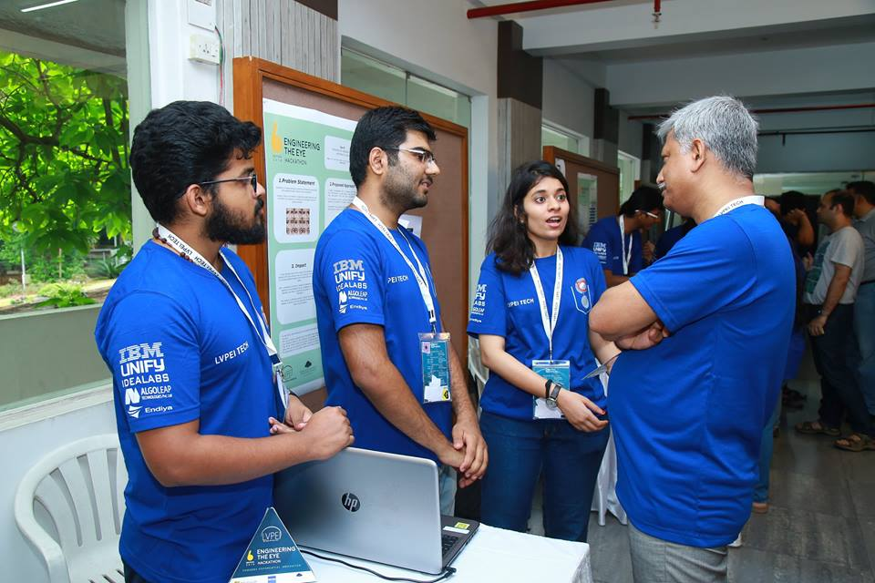
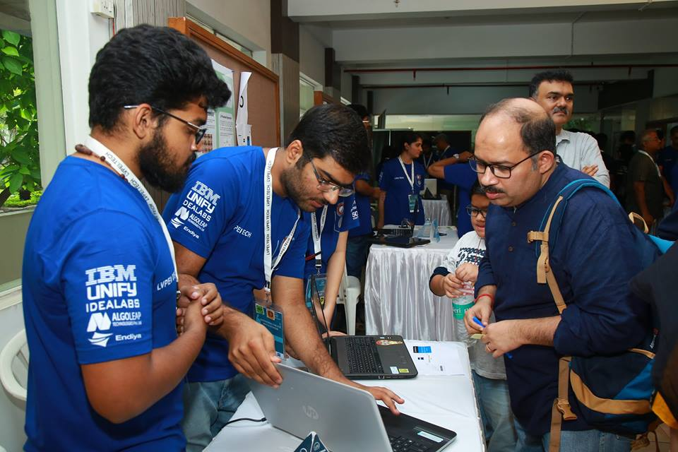
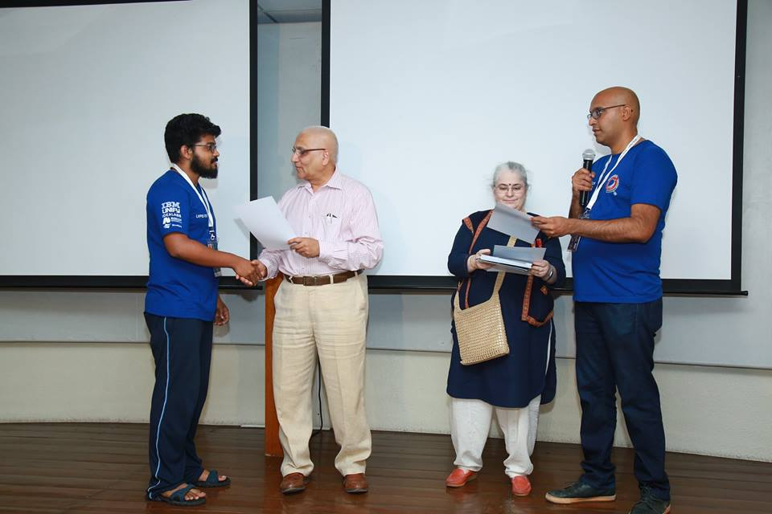
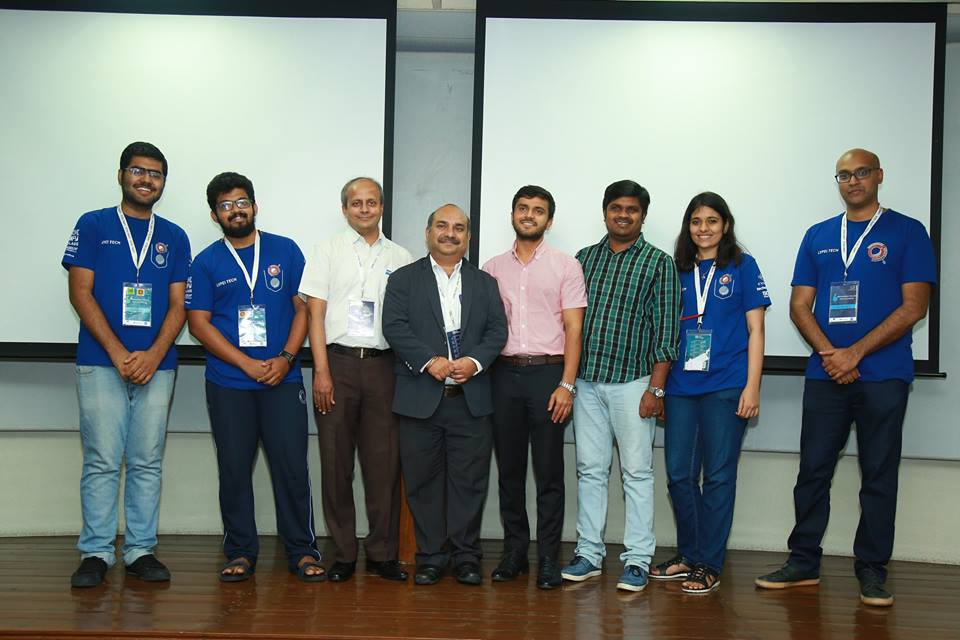